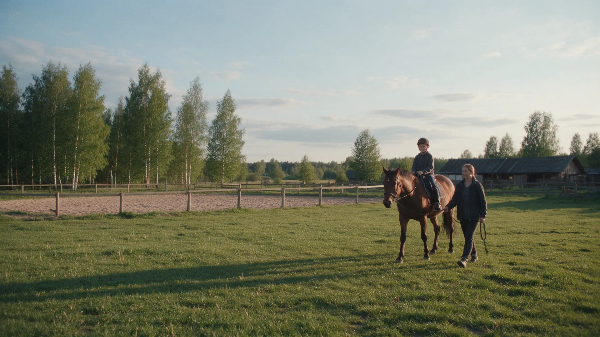
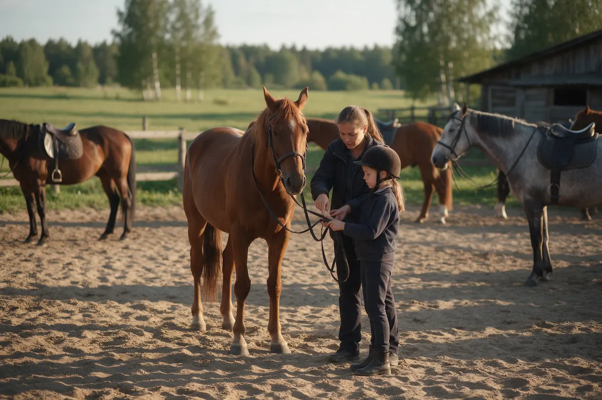
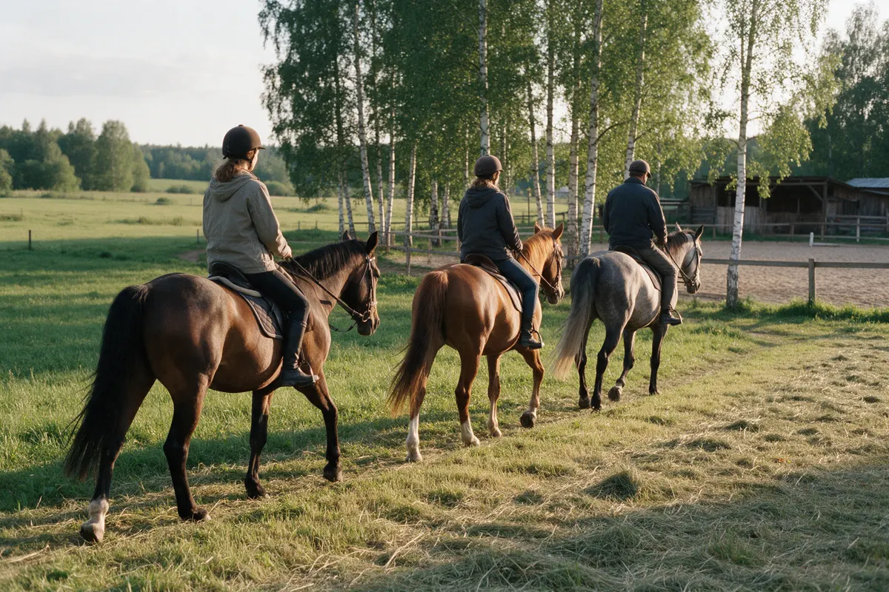
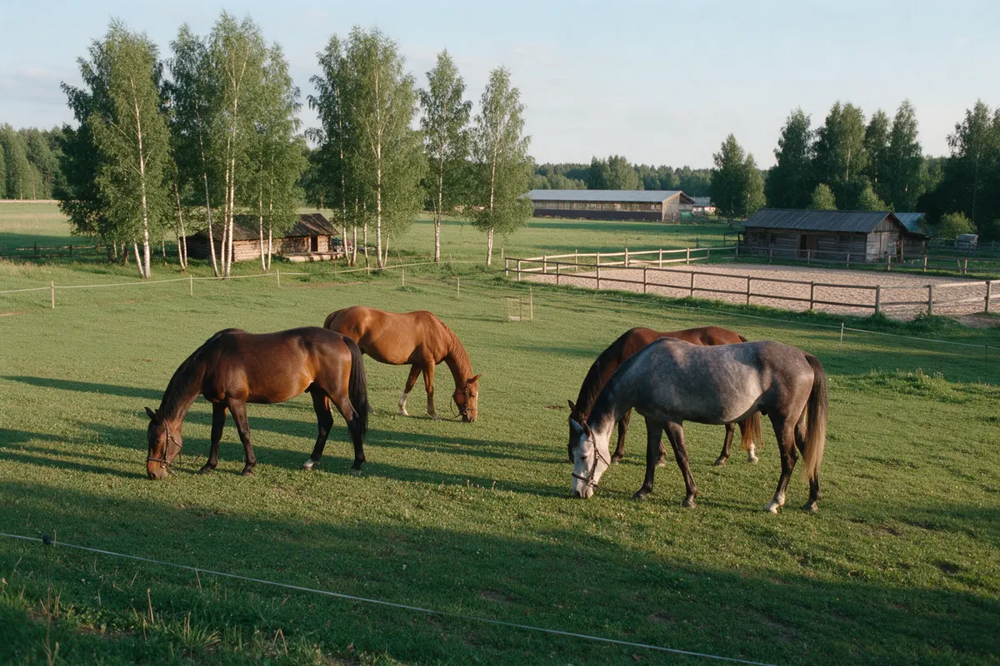

Конный клуб · Черноголовка
Верховая езда для детей от 6 лет и взрослых под Черноголовкой
Занятия с тренером, группы до 3 человек и прогулки по лесам и полям. Крытая бочка – ездим в любую погоду. Запись заранее, цена известна до приезда.
- 4,8 на Яндекс Картах – 108 оценок
- Группы до 3 человек, дети от 6 лет
- Крытая бочка и плац: занятия и в дождь, и зимой

Как проходит занятие
Входит
- Тренер рядом: объясняет, подсказывает и поправляет
- Адекватные, воспитанные лошади
- Плац и крытая бочка – занятия в любую погоду
- Лес, поля и река рядом – есть где погулять
Отдельно, если нужно
- Активные прогулки только для опытных всадников – новичкам начать с занятия
- Постой – отдельная услуга, цену и места уточняйте
Что и сколько стоит
Цены с карточки клуба на Яндекс Картах. Длительность и свободное время назовём при записи – до приезда.
Занятия и прогулки
- Занятие верхомдля взрослых и детей от 6 лет, можно с нуля2 500 ₽
- Групповое занятие до 3 человекдля детей от 6 лет2 300 ₽
- Активная прогулкамини-путешествие по лесам и полям, для опытных всадников3 000 ₽
Для владельцев лошадей
- Постой лошадив месяц: конюшня на 30 голов, выпас 10 га, плац 30х50, бочка28 000 ₽
Цены даны по карточке на Яндекс Картах – актуальную стоимость уточняйте при записи.
Ваш первый приезд по шагам
- 01
Звоните или записываетесь на сайте
Называете день и сколько будет всадников. Отвечаем временем и ценой.
- 02
Вас встречают в конюшне
Знакомим с лошадью и объясняем, как вести себя рядом с ней.
- 03
Разминка и первые шаги в седле
На плацу, под присмотром тренера, без спешки.
- 04
Упражнения по силам
Посадка, баланс, управление. Что не получается – разбираем.
- 05
Гуляете по территории
Поля, лес и речка рядом – отдыхают и дети, и взрослые.



Что обещаем
Научим, а не просто посадим
Тренер объясняет и терпеливо поправляет – об этом пишут гости в отзывах.
Ухоженные, спокойные лошади
Лошади добрые, много гуляют на выпасе.
Цена и время – до приезда
Запись заранее, без сюрпризов на месте.
Погода не страшна
Есть плац и крытая бочка – занятие состоится и в дождь, и в снег.
Отзывы с Яндекс.Карт
«Все лошадки ухоженные, спокойные, на конюшне приятно находиться и в целом эмоции бьют через край. Всем советую!!»
Елена Мокшина · 4 сентября
«Занимаемся здесь с сыном, тренер - Наташа выше всяких похвал. Спасибо за терпение и внимание)»
Ксения Крутова · 8 августа
«Всё здорово!! Отличный персонал, шикарные лошади.»
Кристина Шарагина · 10 июля 2023
Отзывы с карточки на Яндекс.Картах, без правок.
Частые вопросы
Нужен опыт верховой езды?
Нет. Многие приезжают в первый раз – с этого занятие и начинается.
С какого возраста берёте детей?
С 6 лет. Для детей есть групповые занятия до 3 человек.
Можно просто прокатиться?
Активные прогулки – для опытных всадников. Новичкам подойдёт занятие на плацу.
Что надеть?
Удобную закрытую обувь и одежду по погоде. Про шлем и экипировку скажем при записи.
Есть иппотерапия?
В карточке клуба указана иппотерапия. Формат и условия уточните по телефону.
Запишитесь на занятие – лошади уже ждут
- Адрес
- Московская область, городской округ Черноголовка, деревня Беседы, Черноголовка
- Часы
- до 20:00, по записи
- Телефон
- +7 (925) 494-27-69